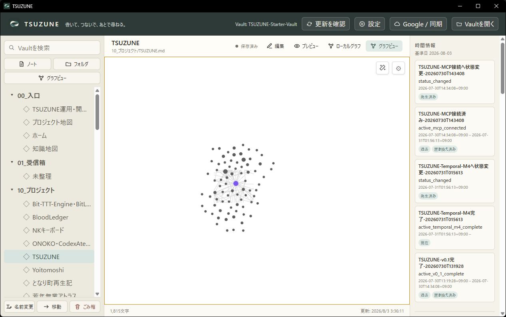
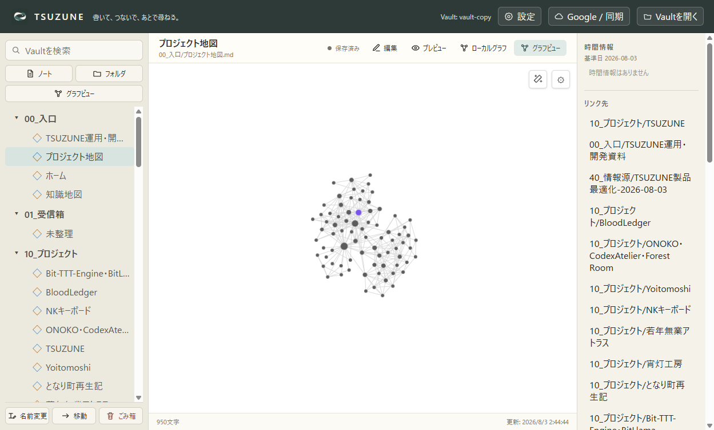

低倍率で途切れるグラフ線を描画方式から修正
Canvasを縮小stageから切り離し、画面固定Canvasへworld-to-viewport変換を適用しました。同じ13.17%表示でも線は全画面へ連続描画されます。
1.73%旧方式で線を描けた画面面積
749×613修正後Canvasの表示サイズ
78 / 267実画面のノード / 辺
360 PASS全回帰テスト
修正前後


根本原因と新方式
- 旧方式は辺Canvasを
.wiki-graph-stageの中へ置き、Canvas自体へCSS zoomを掛けていた。 - 倍率0.131687では749×613pxのCanvasが見かけ上98.63×80.72pxへ縮み、そのbitmap境界より外の線を描けなかった。
- 新方式はCanvasをviewportへ固定し、DPR、画面中心、pan、zoomをCanvas contextの変換行列へ適用する。
- 同じ色・太さ・透明度の辺を一つのpathへまとめ、線ごとのstrokeを減らした。
- DOMノードは操作性のためworld stageに残し、Canvasと同じcamera状態を共有する。
検証
npm run test:production: 44 files / 360 tests passed- MCP: 4 read tools / 3 write tools passed
- installer、packaged smoke、silent install、installed smoke、installed hash、MCP登録: passed
- source fingerprint:
7f7dcf934b2b2a6e44b3135a640939d483e977c5e654f3769fb5f4a493ff565d - installed app.asar:
22cb73979cfd43e07221ee2ca365e7e73ba5131980c34a329608f33a35c64af1 - 本番profileは更新前後で同一digest。
構造化された測定値は assets/graph-edge-viewport-2026-08-03/runtime-summary.json を正本とします。この修正は線のクリッピングを閉じるもので、Obsidian 1.13.4とのGP6全体closureは別途継続します。